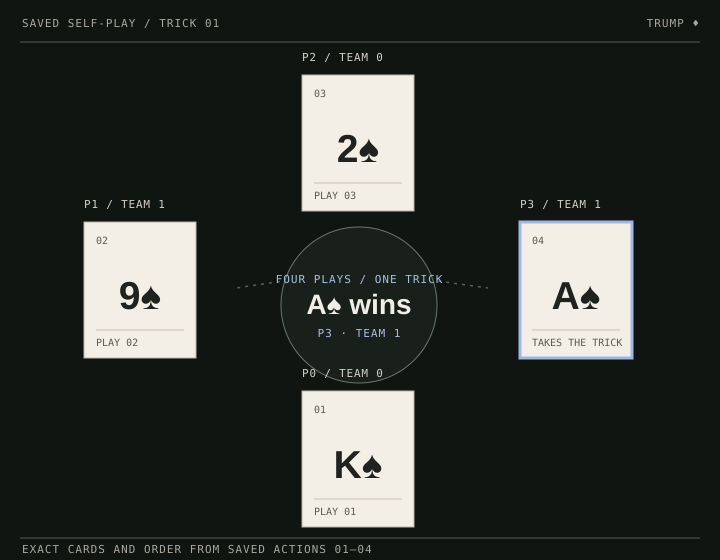
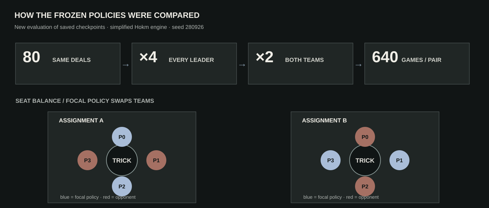

Learning
to play.
Two saved decision systems. In Hokm, a legal-card rule changes which score can be used. In X/O, three move rules change the choice from the same checkpoint.

Four seats. One trick.
Follow the recorded play around the table. The blue hand is next: pale cards cannot follow the lead suit, outlined cards can, and one card carries the saved choice.
All legal action scores
Q values are checkpoint scores, not probabilities.
All four hands can be shown because this is a stored self-play replay. Opponents did not receive each other’s hands as network input. Complete 40-action data ↗
One position. Three rules.
Start with a position where the three rules make different moves. Then play your own board below and compare choices from the same checkpoint.
Try another position.
The saved network scores all nine cells. Occupied cells are masked; the selected rule acts on the remaining cells.
Place X to compare three O decisions from the same position.
The checkpoint weights are unchanged across rules. Raw outputs have no calibrated probability meaning. Saved checkpoints ↗
What did the saved policies do?
Each frozen policy pair played the same 80 deals eight ways: four leaders and both team assignments. The distribution below shows how many of those eight games the focal policy won per deal.

The same policy controlled seats 0 and 2; random play occupied seats 1 and 3.
The 40-decision self-play record uses the checkpoint at every seat. It is a different setup from training.
The engine simplifies Hokm: random trump and first team to seven tricks. Each matchup uses seed 280926 and 640 paired games. The results do not measure play against humans. Evaluation data and conditions ↗